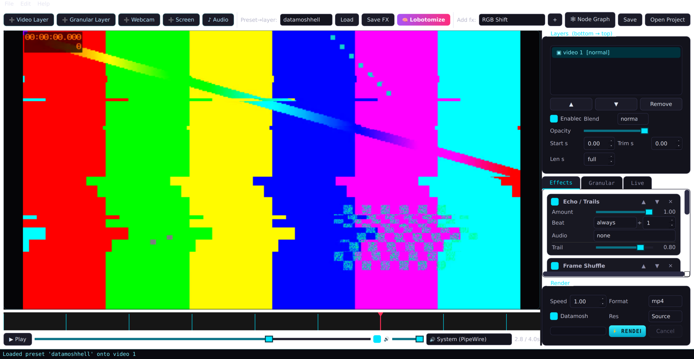
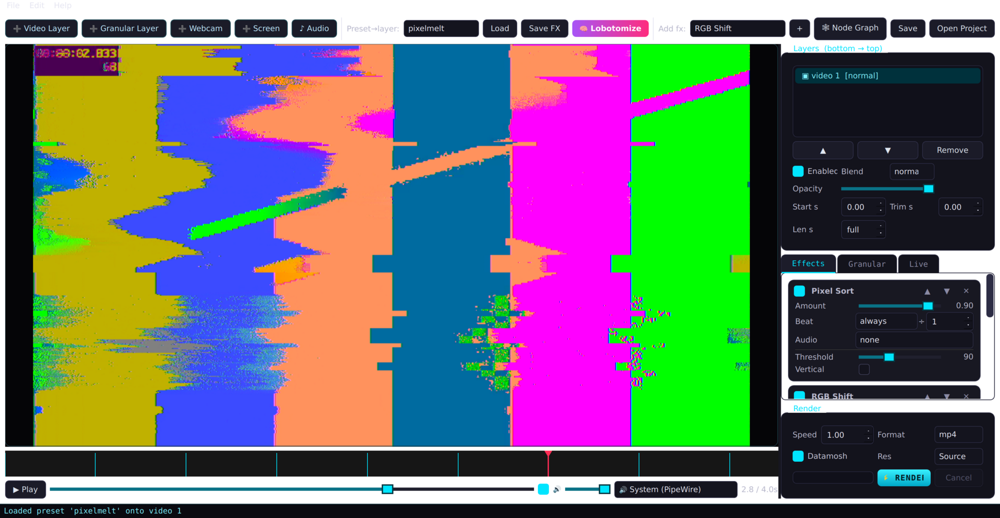
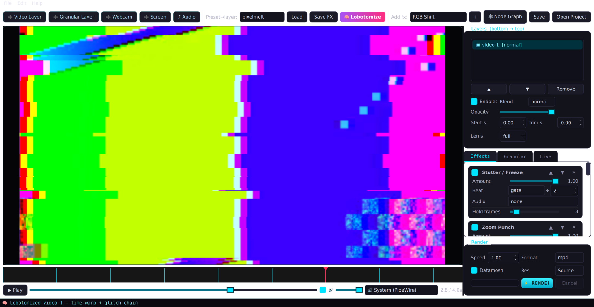
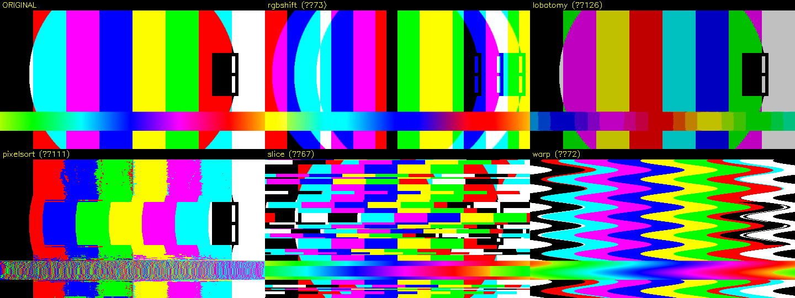

Take a clip, destroy it on the beat. Datamosh, channel lobotomy, pixel-sort melt and frame-granular synthesis in a desktop editor with a real ffmpeg/opencv render backend.

Prebuilt for Linux now, with Windows and macOS on the way — ffmpeg is bundled, so there's nothing else to install. Built automatically from source on every release.
chmod +x *.AppImage && ./*.AppImage
No prebuilt binary for your system? Run it from source — it's a few commands. All releases live on the releases page.
Every effect can fire on detected beats and react to the audio, so a render is chopped, reordered and corrupted in time with the track — not by hand.
librosa detects beats and onsets. Each effect runs always, as a decaying pulse, or hard-gated for a hold time — optionally only every Nth beat.
Map any effect to an audio band — rms, bass, mid, high. Bass drives zoom punches, highs drive the RGB tear, loudness drives grain density.
Frames are encoded to an mpeg4 AVI, then I-frames are stripped at the byte level so motion vectors bloom over the wrong content. Not a shader fake.
Shatter a clip into a cloud of windowed frame grains. The same grain schedule synthesizes matching granular audio, so picture and sound granulate in lockstep.
Composite any number of layers with 16 blend modes. A beat-driven time-warp freezes, ramps and reverses a layer's content against a steady music bed.
One button generates the whole edit: a beat-driven time-remap plus an audio-reactive glitch chain, datamosh on.
moderngl fragment shaders, plus a node-graph mode with feedback loops for video-feedback trails.
Drive params with a gamepad or MIDI, add a webcam or screen layer, and stream the glitch composite to a virtual webcam.
Everything below is rendered by the engine — no mockups.



Python + PySide6. The engine is headless and scriptable; the GUI is a thin layer on top.
git clone https://github.com/willbearfruits/videoglitchcrazynes
cd videoglitchcrazynes
pip install -r requirements.txt
./run.sh # or: python3 main.py
# batch render from the command line (no GUI):
python3 main.py in.mp4 out.mp4 --preset brainfuck --datamosh --speed 1.5Requires ffmpeg + ffprobe on PATH.
Encoding uses h264_nvenc (NVIDIA) and falls back to
libx264. Optional: torch for MiDaS depth,
portaudio for live audio, v4l2loopback for the
virtual cam.